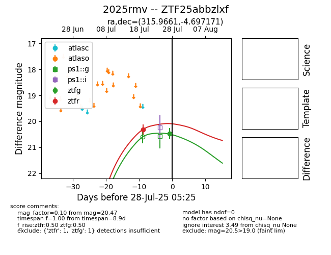

Target 2025rmv at 2025-08-05 23:02, see:
FINK: fink-portal.org/2025rmv
Lasair: lasair-ztf.lsst.ac.uk/objects/2025rmv
ALeRCE: alerce.online/object/2025rmv
TNS: wis-tns.org/object/2025rmv
YSE: ziggy.ucolick.org/yse/transient_detail/2025rmv
alt names
ZTF25abbzlxf (ztf,fink)
2025rmv (tns,yse)
PS25fne (panstarrs)
coordinates:
equatorial (ra, dec) = (315.9661,-4.69717)
galactic (l, b) = (44.7933,-31.45424)
photometry
last ps1::g=20.58, ps1::i=20.42, ps1::r=20.61, ztfg=20.47, ztfr=20.32
3 ps1::g, 1 ps1::i, 1 ps1::r, 2 ztfg, 1 ztfr detections
